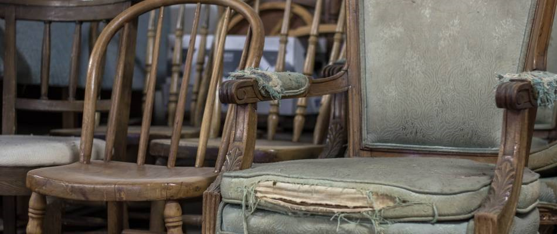
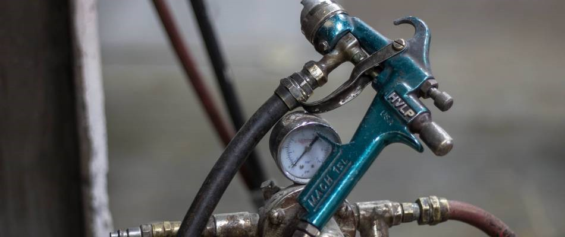
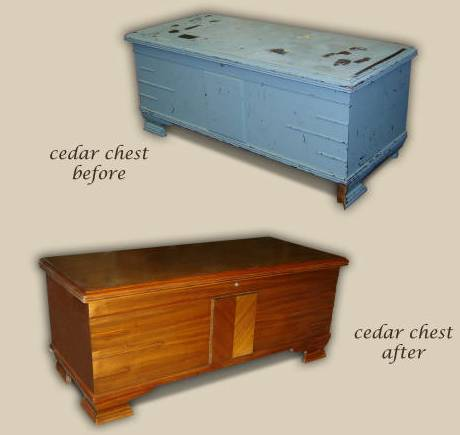
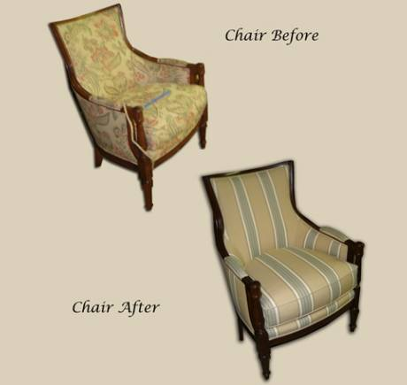

Furniture Repair


Furniture isn't cheap - at least not any furniture that is meant to last. That's why when you purchase a beautiful chair or striking dining table, you expect it to last for quite a while. Unfortunately, some furniture items need a little help, as daily life can cause dings, scratches, tears or extensive damage. Luckily, Ablyss offers professional furniture repair to reverse time and renew your furniture pieces.
Common Furniture Repairs
The furniture in your home experiences more wear and tear than you may think. Over time, even the highest quality furniture can begin to lose its structural stability and visual appeal due to daily activities and regular use. Instead of considering furniture repair a burden or expense, think of it as an investment into the lifespan of your furniture. By repairing what you already own, you take further advantage of the initial expense of buying the furniture in the first place! Instead of dragging an old couch to the curb or hiding away a less-than-perfect wardrobe, consider giving new life to your existing furniture through a repair.
Do you feel like your furniture is no longer providing the most comfortable seat or best storage abilities? It's easy for furniture emergencies to occur out of the blue despite years of wear and tear. You can prevent further damage by examining the condition of your pieces regularly, noting issues that occur from major events such as water damage or smaller daily activities, like scratches. The furniture in your home may need repair if:
Dining chairs feel loose or unstable
Veneer or trim comes loose or completely off of the piece
Stains, spill or water damage is noticeable
Upholstered furniture is flat or uncomfortable
Tears reveal inner foam or stuffing
Structural damage occurs, such as an accidental drop during moving
Drawers no longer open or must be forced open
Scratches, dings and dents are unsightly
Wood furniture looses its sheen or color, or begins to flake
Ablyss offers repairs for all of these issues and more.


DIY Furniture Repairs Versus Professional Work
While the Internet is a great resource for helping with small repair projects, the professionals at Ablyss have decades of experience when it comes to furniture and upholstery repairs. Allow our knowledgeable experts to provide high quality and professional furniture repairs, saving you time, effort and frustration. Because of our commitment to quality work and materials, the repair team at Ablyss is able to perform furniture repairs efficiently while maintaining each piece's originality and style. You can rest assure that your furniture piece will be returned in top-notch condition, ready for more years of enjoyment.
Why Consider Us For Furniture Repair?
At Ablyss, we don't offer cheap, unsightly repairs or just conceal damage to your furniture - we're in the business of carefully and fully repairing your furniture piece to ensure it lasts longer, while adding aesthetic beauty to your home. Our goal is to ensure that every furniture item is fixed with quality workmanship.